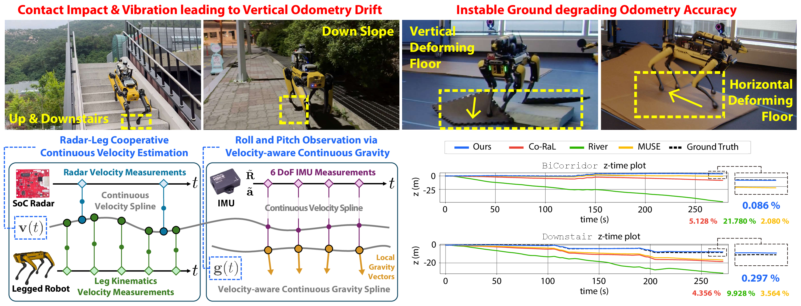
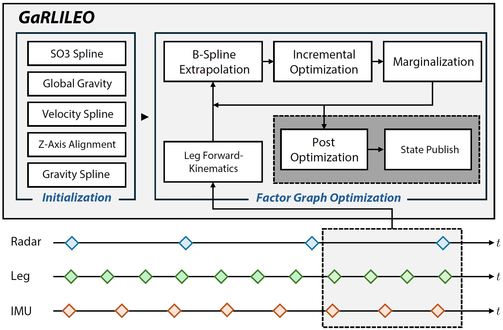

1
Continuous-Time Radar-Leg-Inertial Fusion
Fuses radar Doppler, leg kinematics, and IMU measurements in a continuous-time B-spline framework for seamless asynchronous sensor fusion.
1Seoul National University RPM Robotics Lab · 2Robotics and AI Institute

Deployment of legged robots for navigating challenging terrains, such as stairs, slopes, and unstructured environments, has gained increasing preference over wheel-based platforms. In such scenarios, accurate odometry estimation is a preliminary requirement for stable locomotion, localization, and mapping. Traditional proprioceptive approaches, which rely on leg kinematics and inertial sensing, suffer from irrepressible vertical drift caused by frequent contact impacts, foot slippage, and vibrations, particularly affected by inaccurate roll and pitch estimation.
Existing methods incorporate exteroceptive sensors such as LiDAR or cameras. Further enhancement has been introduced by leveraging gravity vector estimation to add additional observations on roll and pitch, thereby increasing the accuracy of vertical pose estimation. However, these approaches tend to degrade in feature-sparse or repetitive scenes and are prone to errors from double-integrated IMU acceleration.
To address these challenges, we propose GaRLILEO, a novel gravity-aligned continuous-time radar-leg-inertial odometry framework. GaRLILEO decouples velocity from the IMU by building a continuous-time ego-velocity spline from SoC radar Doppler and leg kinematics information, enabling seamless sensor fusion which mitigates odometry distortion. In addition, GaRLILEO can reliably capture accurate gravity vectors leveraging a novel soft S2-constrained gravity factor, improving vertical pose accuracy without relying on LiDAR or cameras.
GaRLILEO enables robust legged-robot odometry by continuously fusing radar, leg kinematics, and IMU with velocity-aware gravity estimation.

Fuses radar Doppler, leg kinematics, and IMU measurements in a continuous-time B-spline framework for seamless asynchronous sensor fusion.
Estimates a robust local gravity vector with a soft S2 constraint to reduce roll/pitch degradation and vertical drift.
Uses radar Doppler velocity to compensate for slip-induced errors in leg kinematics through a horizontal velocity bias.
Both SNU and RAI systems use a TI mmWave radar, a MicroStrain IMU, and a Boston Dynamics Spot robot.


TI mmWave radar and MicroStrain IMU mounted on Spot for robust indoor-outdoor operation.

Same sensor stack on Spot, configured for repeatable data collection across varied terrains.
| Sensor | Manufacturer | Model | Topic name | Frequency | Description |
|---|---|---|---|---|---|
| Legged robot | Boston Dynamics | Spot | /joint_states/spot/status/feet | 150 Hz 150 Hz | Sensor Measurements |
| Radar | Texas Instruments | IWR1843BOOST | /ti_mmwave/radar_scan_pcl_0 | 20 Hz | Sensor Measurements |
| IMU | MicroStrain | 3DM-GV7-AHRS | /imu | 100 Hz | Sensor Measurements |
| LiDAR | Ouster | OS1-32 | /ouster/points | 10 Hz | Ground-truth Reference |
| Laser scanner | Leica | RTC360 | - | - | Ground-truth Reference |
| Sensor Name | Framerate | Wave frequency | Waveform | TX antennas | RX antennas | Range resolution | Max range | Doppler velocity resolution | Max Doppler velocity | Azimuth resolution | Elevation resolution |
|---|---|---|---|---|---|---|---|---|---|---|---|
| TI mmWave IWR1843BOOST | 20 Hz | 77 GHz | FMCW | 3 | 4 | 0.068 m | 13.92 m | 0.08 m/s | 2.56 m/s | 15° | 58° |
The GaRLILEO Dataset contains diverse indoor and outdoor sequences captured by a legged robot equipped with a millimeter-wave radar, IMU, and leg kinematics sensors. Each sequence is provided with synchronized ros2 bag files, calibration data, and ground-truth maps or trajectories when available.
| Sequence | Path Length (m) | Elevation Change (m) | Duration (s) | Loops (#) | Calibration | GT Map |
|---|---|---|---|---|---|---|
| Atrium | 109.93 | - | 124.50 | 1 | SNU System | GT Map 2 |
| BridgeLoop | 161.17 | 1.72 | 187.20 | 3 | SNU System | GT Map 3 |
| CorriLoop | 208.68 | - | 229.40 | 2 | SNU System | GT Map 4 |
| BiCorridor | 240.82 | 4.72 | 277.29 | 1 | SNU System | GT Map 4 |
| Downstair | 233.75 | 8.81 | 270.90 | 2 | SNU System | GT Map 1 |
| Upstair | 197.22 | 9.37 | 227.89 | 1 | SNU System | GT Map 3 |
| SlopeStair | 273.37 | 10.06 | 307.49 | 1 | SNU System | GT Map 1 |
| Overpass | 169.17 | 7.23 | 213.49 | 1 | SNU System | GT Map 5 |
| Tunnel | 247.94 | - | 277.00 | 1 | SNU System | GT Map 7 |
| Quad | 447.83 | 10.72 | 503.69 | 1 | SNU System | GT Map 6 |
| MoCap-E | 44.91 | 0.57 | 139.10 | 2 | RAI System | - |
| MoCap-H | 42.48 | 0.60 | 79.46 | 2 | RAI System | - |
Sequence videos show odometry behavior across atrium, corridor, bridge loop, overpass, and motion-capture environments.
@article{noh2026garlileo,
title={GaRLILEO: Gravity-aligned Radar-Leg-Inertial Enhanced Odometry},
author={Noh, Chiyun and Jung, Sangwoo and Kim, Hanjun and Hu, Yafei and Herlant, Laura and Kim, Ayoung},
journal={The International Journal of Robotics Research},
year={2026},
url={https://garlileo.github.io/GaRLILEO/}
}